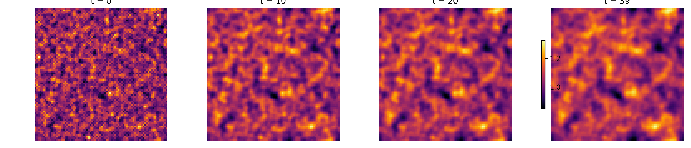
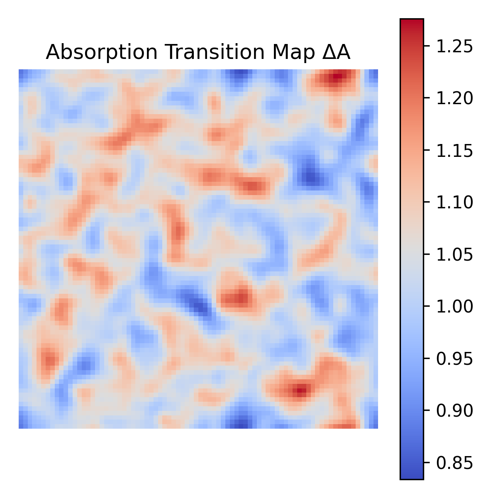
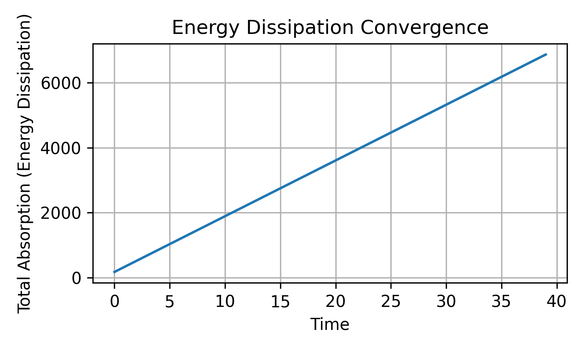

WHITEPAPER: Diffusive Absorptive Photonic Lattice(DAPL)
A Dissipative, Self-Learning Photonic Computing Substrate
(Attractor Photonic Computer — APC)
2026-05-13
We introduce the Diffusive Absorptive Photonic Lattice (DAPL), a non-von-Neumann computing substrate in which computation emerges from light propagation, phase interference, and diffusive material memory. Unlike conventional photonic processors that emulate digital logic, DAPL performs computation through physical self-organization. Learning is encoded as soft, diffusive absorption changes within a fixed spatial geometry, biasing future light propagation toward stable, low-dissipation attractor states. This architecture naturally supports continuous learning, robustness to noise, and efficient solution of optimization and pattern-based problems without explicit programming or training algorithms.
1. Motivation and Context
Modern computing architectures remain constrained by:
Explicit instruction execution
Separation of memory and computation
Clocked, discrete operation
Energy inefficiency in adaptive tasks
Photonic computing promises speed and efficiency, but most approaches attempt to replicate digital logic using light, inheriting the same architectural limits. DAPL proposes a different approach:
Computation is not executed — it emerges.
Instead of logic gates, DAPL uses physical law: Wave interference, Energy dissipation, Spatial diffusion, Attractor formation.
2. Conceptual Overview
DAPL consists of a fixed photonic geometry through which coherent light propagates. The geometry defines possible pathways, but does not encode computation. Computation arises from three interacting processes:
Phase Interference: Multiple propagation paths interfere constructively or destructively.
Absorptive Material Memory: Regions experiencing unstable interference increase absorption slightly.
Diffusive Biasing: Absorption spreads to neighboring regions, shaping a global preference landscape.
Over time, light redistributes itself toward stable, low-loss configurations, forming attractors that represent solutions.
3. Governing Principle
The system obeys a single unifying rule:
Light statistically migrates toward paths of minimal accumulated dissipation under phase constraints.
This rule replaces: Instruction sets, Optimization algorithms, Training procedures.
4. Architectural Properties
4.1 No Clock
Dynamics evolve continuously until equilibrium or quasi-equilibrium is reached.
4.2 No Program / No Instructions
The “program” is encoded in Geometry, Input conditions, Material history.
4.3 Unified Memory and Compute
Absorption both stores experience and influences processing.
4.4 Soft Adaptation
All paths remain accessible; none are permanently disabled.
4.5 Diffusive Learning
Memory spreads spatially, enabling context, coherence, and generalization.
5. Learning and Stability
Learning in DAPL is:
Unsupervised
Continuous
Energy-driven
Physically enforced
Stability is guaranteed by:
Accumulative absorption
Diffusive smoothing
Saturation limits
Adaptability is preserved by:
Soft biasing
Ongoing exploration
Partial reversibility or slow relaxation
This places DAPL in a rare regime: Stable but never frozen.
6. Computational Capabilities
DAPL excels at problems expressible as energy landscapes:
Pattern recognition
Optimization
Constraint satisfaction
Routing and flow
Control and stabilization
Sensor fusion
Prediction in noisy environments
It is not intended for:
Arithmetic precision
Symbolic logic
General-purpose programming
DAPL complements CPUs; it does not replace them.
7. Relation to Existing Paradigms
| System | Difference |
|---|---|
| CPUs | Discrete, clocked, symbolic |
| Neural networks | Algorithmic training, explicit weights |
| Optical neural nets | Digitized abstraction |
| Reservoir computing | Often stochastic |
| DAPL / APC | Physical learning via dissipation |
DAPL belongs to a distinct class: dissipative substrate computing.
8. Diagrammatic Explanation (Textual)
9. Minimal Physical Prototype
9.1 Physical Components
Material: Photorefractive crystal (Lithium Niobate)
Geometry: 2D waveguide lattice or etched interference region (\(\sim\) 1–5 cm)
Light Source: Single coherent laser (fixed wavelength)
Inputs: Spatial or phase-modulated light injection
Readout: Camera or photodiode array measuring output intensity
distribution
9.2 Operation
Inject repeated or varying input patterns, allow interference, absorption increases in unstable regions, absorption diffuses spatially, repeated exposure biases future propagation, observe emergence of preferred output modes.
9.3 Success Criteria
Output distribution changes over time without reprogramming, system converges toward stable patterns, previously unstable paths become suppressed but not eliminated, system adapts when input statistics change. This alone would validate DAPL experimentally.
10. Terminology
Formal Name: Diffusive Absorptive Photonic Lattice (DAPL)
Descriptive Alias: Attractor Photonic Computer (APC)
Recommended usage: “DAPL (Attractor Photonic Computer) is a dissipative
photonic computing substrate…”
11. Concept Summary
DAPL is a non-von-Neumann computing substrate that performs computation through physical light propagation. Computation emerges from phase interference, energy dissipation, and diffusive material memory rather than explicit logic.
Core Principles
Signal Medium: Coherent light (single or multiple wavelengths)
Structure: Fixed spatial lattice or waveguide geometry; no moving parts. Geometry defines possibility space, not computation.
Computation Mechanism: Light explores many paths simultaneously. Phase alignment creates constructive/destructive interference. Interference stability determines local energy dissipation.
Memory Mechanism: Absorption increases in unstable/conflicting regions; soft, persistent, diffusive.
Learning Rule: Paths with high dissipation become statistically less preferred over time.
Key Properties: No clock, no instruction set, unified memory/compute, continuous analog operation, always learning, naturally stable yet adaptive, graceful forgetting via diffusion.
Computational Class: Pattern recognition, optimization, constraint satisfaction, prediction, control, sensor fusion. Not intended for deterministic arithmetic, symbolic programming, Boolean logic.
Output Interpretation: Spatial intensity distributions, phase stability regions, preferred propagation modes.
Failure Modes: Burnout avoided via absorption saturation, local minima avoided via soft bias, overfitting avoided via diffusion, oscillation damped by dissipation.
12. Minimal Simulation Model (Conceptual + Pseudocode)
# 2D Grid State Variables
For each cell (x, y):
A(x,y) = absorption (memory)
I(x,y) = light intensity
Phi(x,y) = phase
# Core Loop
Inject Light: Initialize coherent wave(s) at input boundary
Propagate Light: Update phase and intensity via wave equation
Apply Absorption: I <- I * exp(-A)
Interference Stability: instability = variance(Phi_neighbors)
Update Absorption: A <- A + alpha * instability
Diffuse Absorption: A <- A + D * laplacian(A)
Saturate/Relax: A <- clamp(A, A_min, A_max)
RepeatEmergent Behavior: Stable interference → low absorption → preferred paths. Unstable interference → growing absorption → discouraged paths. Large-scale patterns emerge without explicit programming.
13. Conclusion
DAPL represents a shift from symbolic computation toward physical problem solving. By exploiting light, dissipation, and diffusive material memory, it offers hardware systems that learn naturally, stabilize gracefully, and compute by settling rather than executing. This architecture does not simulate intelligence — it embodies adaptation.
Supplementary Material
Numerical Simulation Details
The DAPL dynamics were simulated on a two-dimensional lattice representing a diffusive photonic substrate with spatially varying absorption. The simulation is intentionally minimal to isolate the core physical mechanism of dissipative learning.
Each lattice site \(i\) is characterized by:
A local absorption coefficient \(A_i(t)\)
A phase variable \(\phi_i(t)\)
No explicit optimization objective, gradient descent, or loss function is imposed. Learning emerges purely through physical dissipation.
Update Equations
At each discrete time step \(t\), absorption evolves according to:
\[\begin{equation} A_i(t+1) = A_i(t) + \eta \, \Delta \phi_i(t) + D \nabla^2 A_i(t) \end{equation}\]
where:
\(\eta\) is the absorption update rate,
\(D\) is the diffusion coefficient,
\(\Delta \phi_i(t)\) measures local phase instability.
Phase instability is computed as:
\[\begin{equation} \Delta \phi_i = \sum_{j \in \mathcal{N}(i)} \left| \phi_i - \phi_j \right| \end{equation}\]
with \(\mathcal{N}(i)\) denoting nearest neighbors.
This rule increases absorption preferentially in regions of unstable interference while allowing learned suppression to diffuse spatially.
Interpretation as Physical Learning
Absorption functions as a persistent material memory. Regions repeatedly associated with destructive interference accumulate increased absorption, suppressing future propagation.
This mechanism:
Requires no external training signal
Operates continuously in time
Is inherently stable due to dissipation
The resulting dynamics define a physical attractor landscape, in which computation corresponds to convergence toward low-loss optical trajectories.
Time-Stacked Absorption Evolution

These results visually demonstrate that learning occurs gradually through physical memory accumulation rather than discrete state updates.
Absorption Transition Map

This map directly visualizes where and how the system learns.
Energy Dissipation and Stability

The absence of oscillatory behavior demonstrates that DAPL operates in a physically stable regime governed by dissipation rather than feedback amplification.
Relation to Attractor Computing
DAPL implements a continuous attractor computer embedded directly in optical physics. Unlike digital recurrent networks, attractor basins are not encoded symbolically but emerge from material memory.